| Project Type | Concept Project |
| Team Size | 2 Members |
| Timeline | 2021 (2 months) |
| Device | Desktop |
| Final Product | Prototype |
Project Objective.
Whether or not it was only in our experience, we realized that advertisements regarding sweets have been on the decline. The last candy campaign that we saw on the internet was probably Snickers and their "you're not you when you're hungry" series. This means that people can only be made aware of new relases when they see them in stores.
It is this dwindling exposure on newly released candy products that inspired us (candy lovers) to create an alternative method of getting the most recent candy industry news to people who like candy. People who want to try new flavors and want to explore their options.
“How might we provide the people who like candy the latest candy industry news and facilitate their discovery of new candy products?”
My Roles.
Although I had a hand in every aspect of the project, I mainly focused on market research, creating user personas, and prototyping.
The Process.
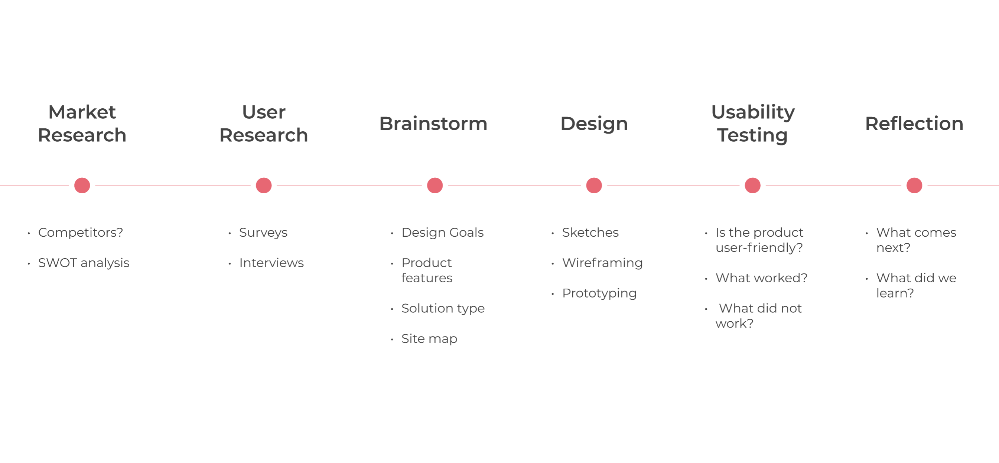Competitive Analysis.
Before starting user research, we needed to see what the current market looks like. In our case, products that provide candy news to people who like candy. We identified and conducted SWOT analysis on three competitors: Candy Industry, Candy Gurus, and Confectionery News.
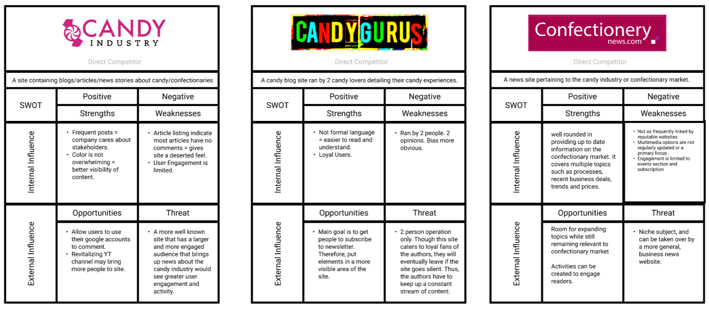What we learned.
Candy news sites are extremely niche since they are catered to a specific audience (people who enjoy candy). This is a major weakness because larger news agencies such as Business Insider can easily overshadow these sites. Larger agencies tend to target a much broader audience with a variety of topics such as business, politics, and economy. Niche sites such as the candy sites we looked at thrive because they have a loyal following. These sites use newsletters to remind people that the site is still alive. Sadly, some of the sites don't feature the newsletters prominently or without a strong call to action.
User Research.
Although we want to cater towards people who like candy, we don't know much about them. For example, what are their behaviors and motivations when dealing with candy? What hinders their enjoyment of candy?
However, before we start answering those questions, we must find these people who say they enjoy candy. Thus we sent surveys to relevant Reddit communities (r/candy and r/chocolate). We chose Reddit communities because of the high concentration of people who most likely enjoy candy. The two main traits we were looking for were as follows: Were they willing to try new flavors? Did they stay updated with new candy releases?
With just 2 posts, we now had 75 respondents to our survey!
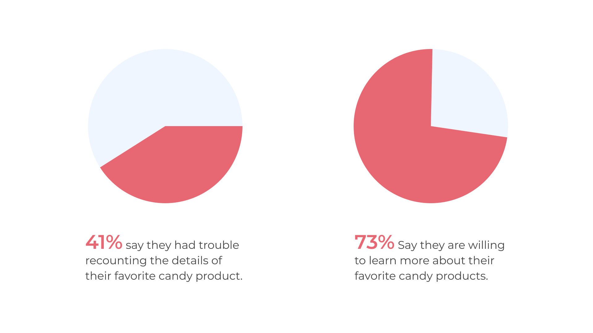With over half the respondents meeting our criteria, we moved forward with interviews to understand candy enjoyers at a deeper level. After reaching out to people, we ended up interviewing 23 people in various ways. Mostly through messaging and some on Zoom call. Below are the summarized interview results.
Why buy candy?
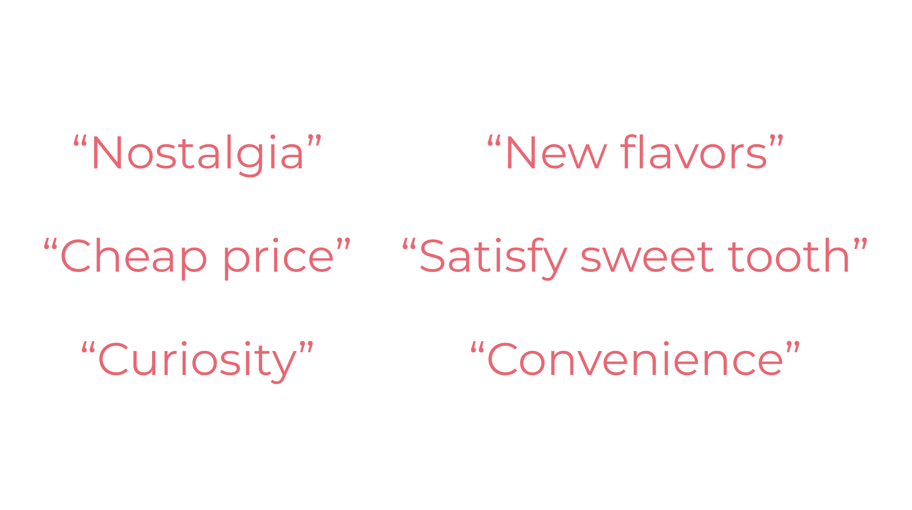Any Hindrances?
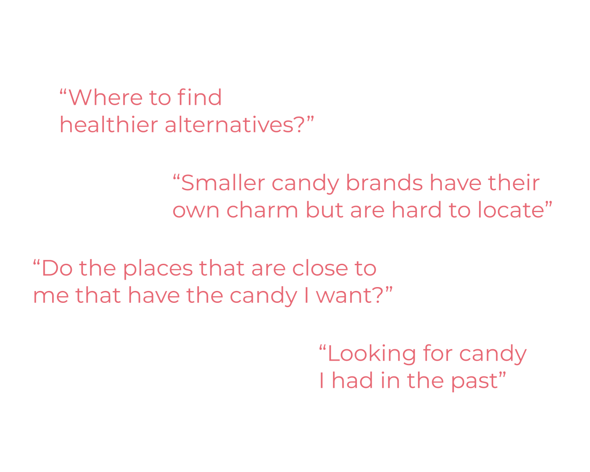User Personas.
We created three personas from our user research. Although we included age, family, and location in our personas, they were merely for constructing a character that would make sense and were in no way reflective of the interviewees (we never asked). Rather, our personas reflected the goals/desires of the people who we interviewed.
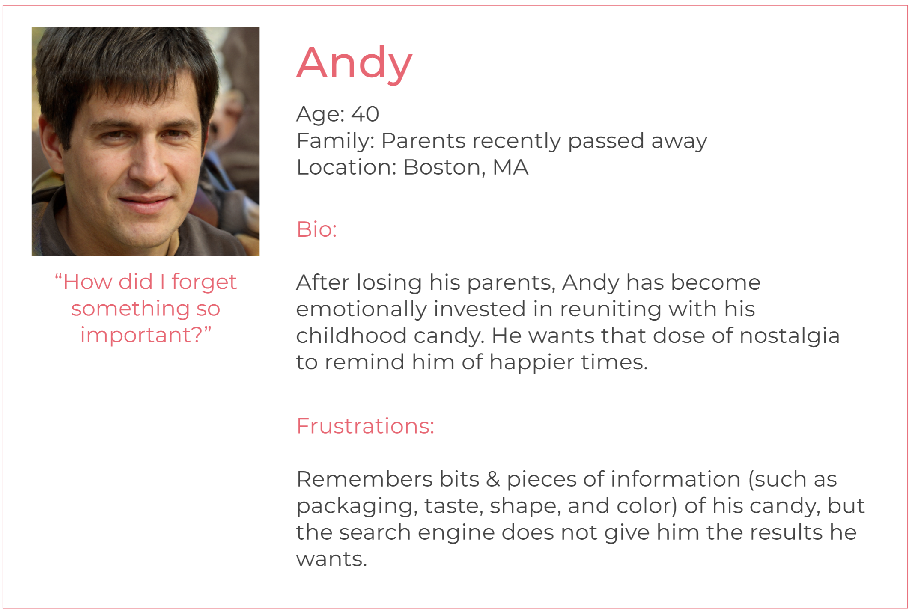 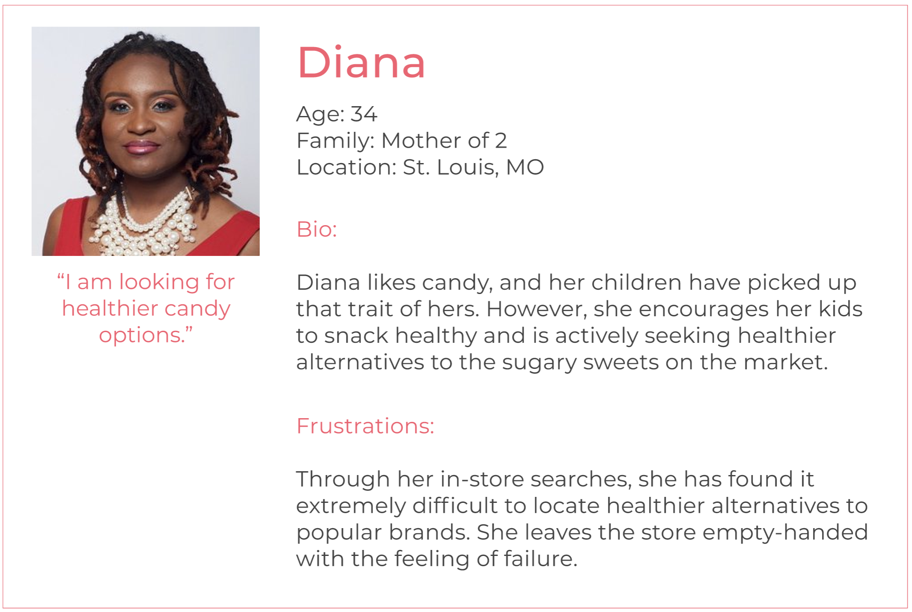 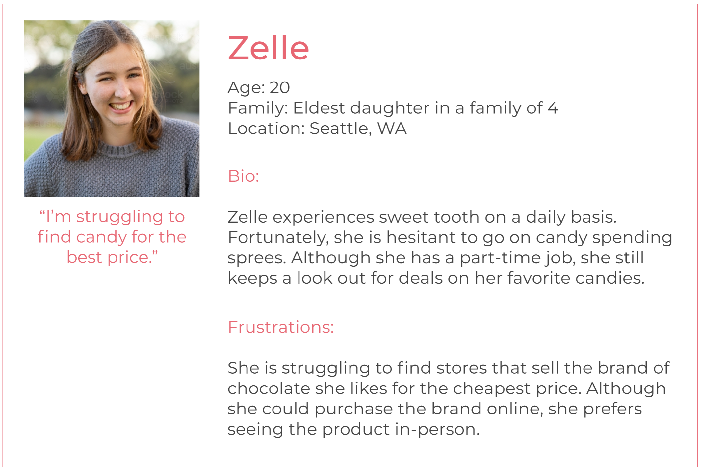Deciding on Features.
We discussed our product's features. We based all the features on whether it would meet our persona's goals. Additionally, we went back through our user research to ensure that we didn't accidently omit any other needs of the people who we surveyed and interviewed.
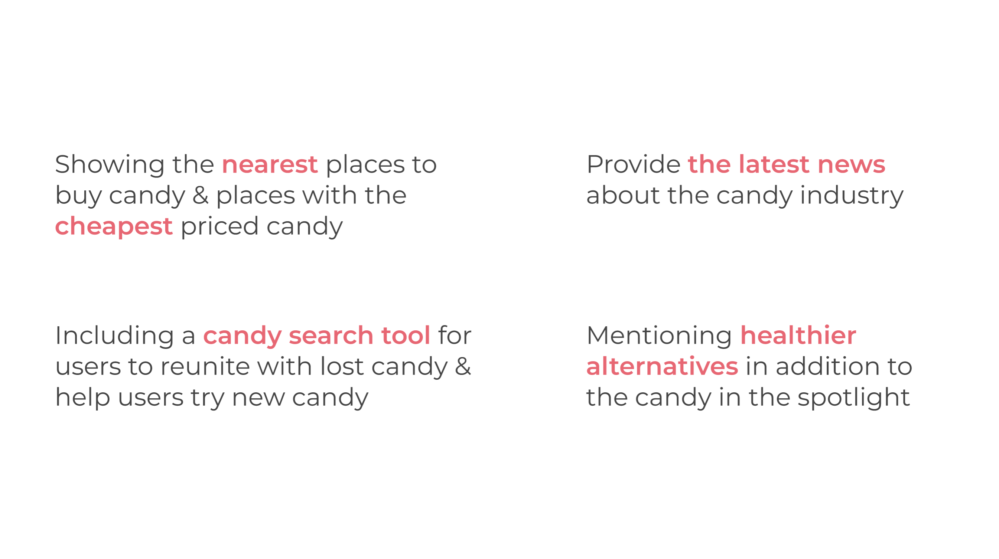Type of Application.
Now that we know what the product should do. It was time to settle on the type of product. We considered a mobile application, a website, and even a Discord server. In the end, we decided on creating a website for its flexibility and ease of use. A website should also be responsive so it can function on various screen sizes.
Site Map.
We created a simple site map as a guide while we sketched the different pages of the site. We didn't want to leave out a feature and forget about it entirely. By following a site map, we would be kept on track.
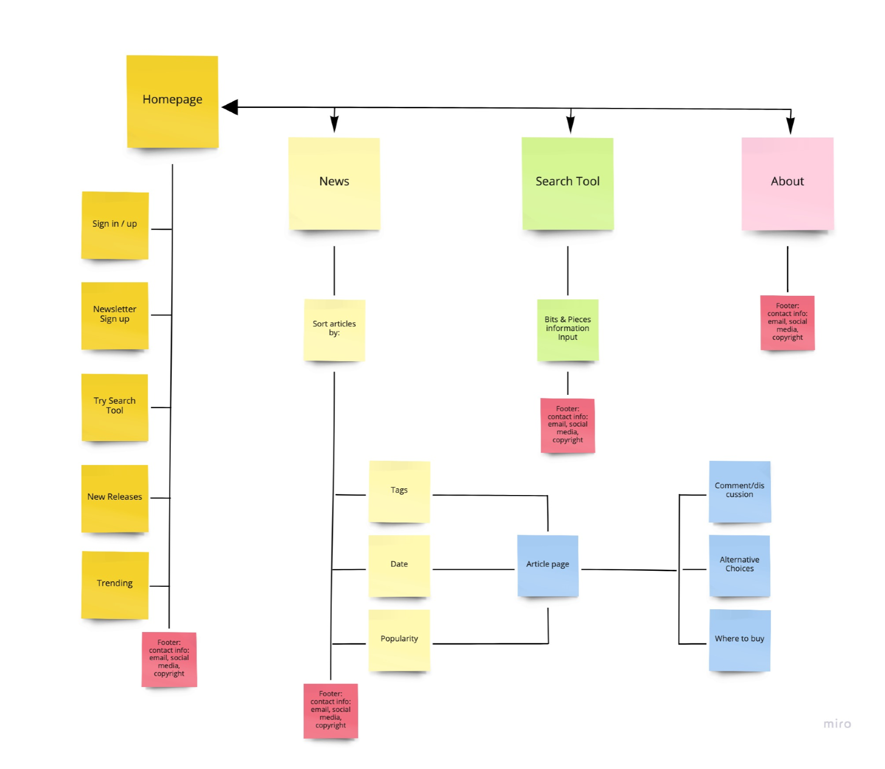Sketches.
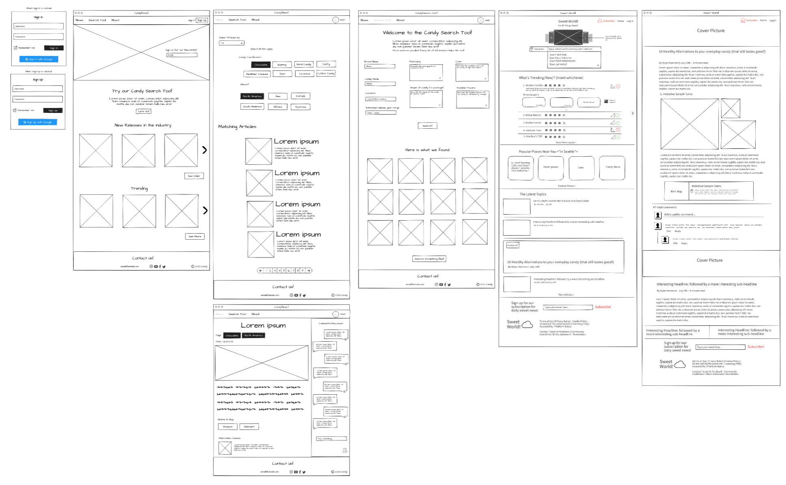Wireframes.
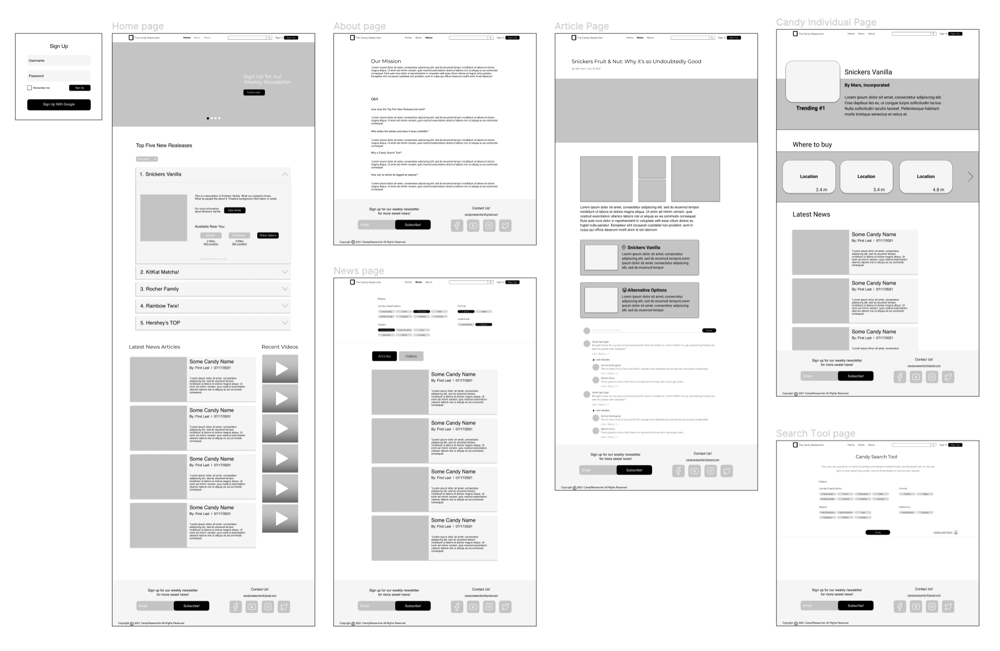Quick User Feedback.
Before we began to prototype, we wanted feedback from candy lovers to ensure that the site's features aligned with the user's goals as well as confirming that our design choices are user-friendly. We found five candy enjoyers who we have interviewed before. There were two design choices that they less favored compared to our other design choices.
Annoying Dropdowns.
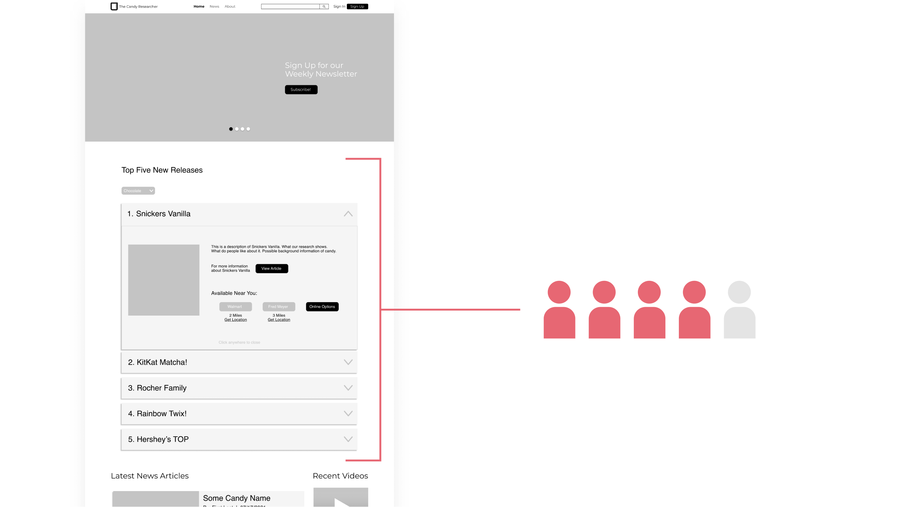People didn't like the dropdowns on the top five new releases list because they hide essential information forcing the user to click and that gets annoying. All they wanted was the name, rank, and image of the product.
Boring Article Layouts.
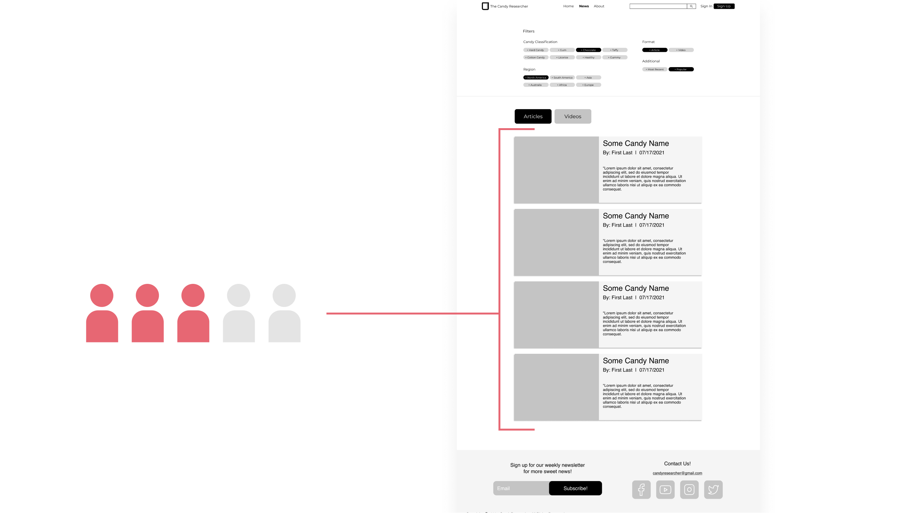People also thought that the layout of the articles on the news page made the site seem boring in that nothing seems interesting to click on. They also expressed concern about the length of the article description. They didn't want to read a paragraph description before even seeing the article itself.
Using Inspiration to Overcome Challenges.
A Simplified List Design.
The reason that we used dropdowns for the top five new releases list is because it was space-efficient. However, now that we know the information that the user wants (ie. the product name, rank, and image), we can simplify the list design. That is why we settled on Billboard.com's Hot 100 list because it has all the essential information that people want.
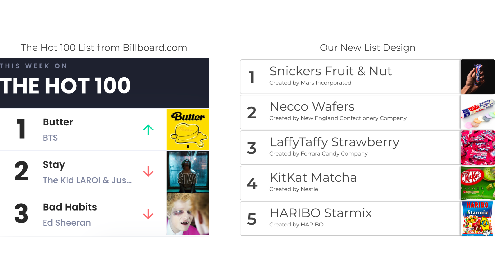A Livelier Article Layout.
We looked at article layouts from other news sites such as The New York Times and Business Insider. However, the article layout of Eater.com resonated with us. Their layout displayed more important articles by merely making the article card size larger. The layout also has no big article descriptions (because they know that no-one would read it). Instead, they opted for more descriptive article titles.
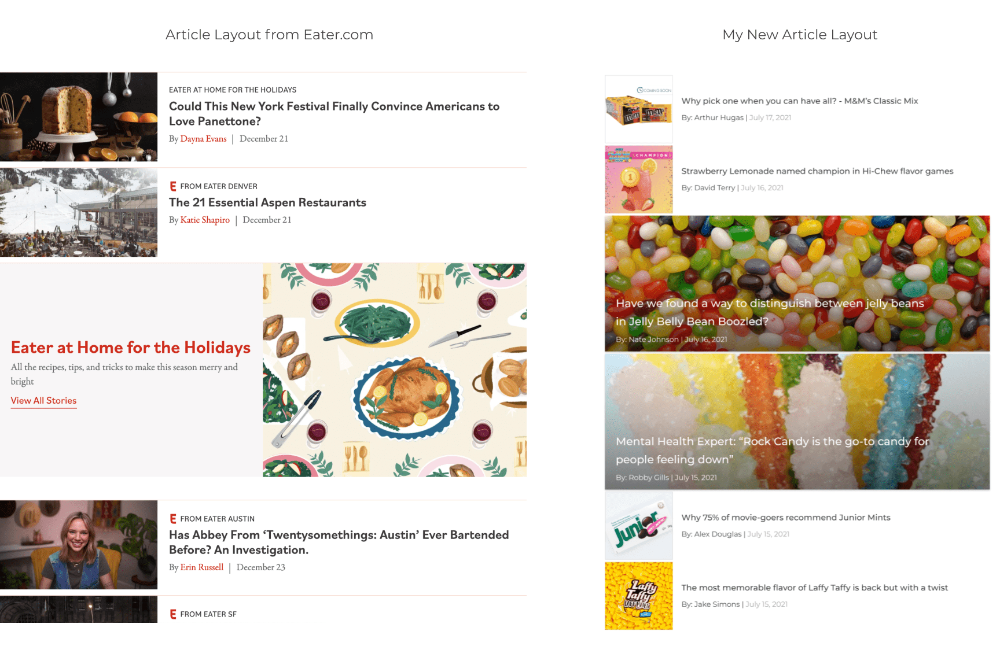